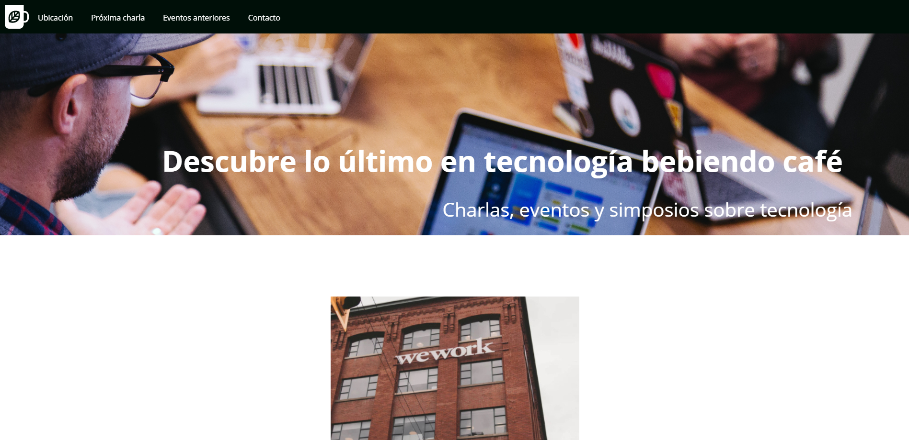

Hola!! Mi nombre es Matías Criado y te doy la Bienvenida a mi Portafolio
En esta página podrás conocer un poco más de mí y del camino que he recorrido para transformarme en un desarrollador Front-End, en donde tome la decisión de cambiar mi rumbo profesional estudiando de manera autodidacta sobre el desarrollo web en primera instancia y luego tuve la fortuna de ganar el beneficio de la beca Talento Digital para Chile. Al día de hoy te puedo decir que aún no soy un experto, pero me esfuerzo cada día para lograr serlo.
Inspiración, perseverancia e imaginación son palabras que me representan profundamente. Ya que, en los últimos años he descubierto mi pasión por crear cosas y no hay mejor lugar paro ello que la industria de la tecnología. Esa es la principal razón por la cual decidí variar la brújula de mi desarrollo profesional.
Nací en el año 1996, desde pequeño siempre fui inquieto y me han movido los nuevos desafíos. Cuando tenía aproximadamente diecinueve años quise realizar un proyecto musical, en donde compuse algunas canciones que nunca vieron la luz, y que dudo que lo hagan jaja. Sin embargo, estuve a punto de entrar a estudiar música en la Universidad, pero finalmente no se concreto aquello y "los caminos de la vida" como dice Vicentico me llevaron a estudiar Gestión de Información, Bibliotecología y Archivística en la UAH. Curiosamente en esta carrera curse el ramo de desarrollo web, en donde quedé hipnotizado por la cantidad de recursos que se podían utilizar para plasmar una idea por medio de simples líneas de código. A partir de ese momento me interese más por el tema de las tecnologías y comencé a estudiar por cuenta propia y de manera autodidacta los lenguajes de HTML y CSS. A la par iba estudiando tambíen bases de datos, como MySQL. Otra área que me llamo la atención fue la del marketing digital, en donde he investigado y estudiado SEO y SEM. Todo esto de manera teórica, ya que no he tenido la oportunidad de llevarlo a la práctica. Aunque este año me he decidido en cambiar eso y pretendo materializar los conocimientos a través de un proyecto personal de una tienda electrónica. Para de esta manera, poder validar el esfuerzo que he invertido de forma autodidacta.
Mi Experiencia
Integrante de la alinza rebelde y de the fellowship of the ring
Futuro desarrollador Front-End
Padawan en Tecnologías:
Mis Ultimos Trabajos

Meet&Coffe
Primer proyecto desarrollado mediante HTML y CSS para el bootcamp de Talento Digital. No responsivo.